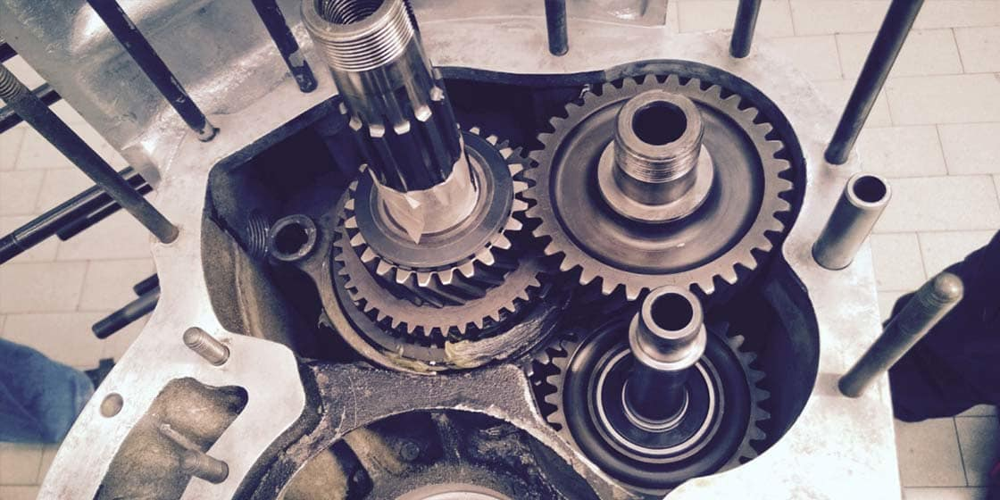
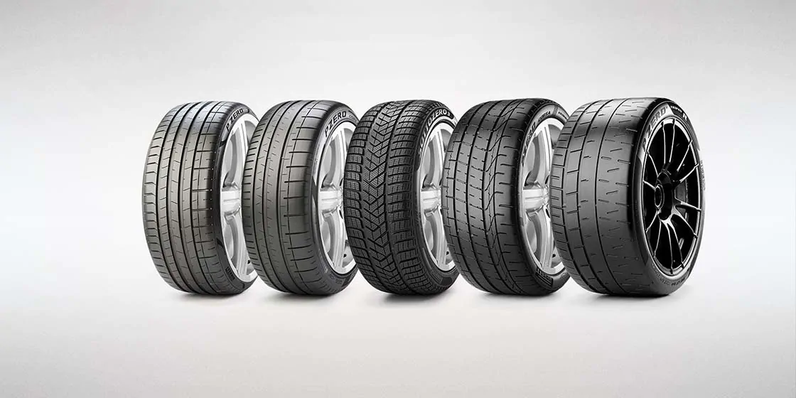

The goal of Automobili Lamborghini has always been to exceed our customers' expectations in terms of quality and service. This same principle also applies to our spare parts, designed and built with the same attention to quality and authenticity. Day after day, your Lamborghini will fully radiate all of its power, but in order to preserve its efficiency, the synergy among each single element of the car must be preserved. This can be achieved by using only genuine spare parts; optimal performance, quality, and safety are achieved only with components that perfectly comply with the specifications of each Lamborghini model.

GENUINE HISTORIC SPARE PARTS.
For every Lamborghini classic model, the Polo Storico is able to provide genuine spare parts either from the wide stocks of the company or specially made by certified and qualified Lamborghini suppliers, for a total value of about €15 million. The personnel of Lamborghini's Authorized Car Shops is specially trained to provide assistance for historical vehicles. Should a special part not be available in our warehouse, it can be immediately manufactured on the basis of the original drawings. This special service offered by the Polo Storico makes it possible to replace Lamborghini's vintage components without ever jeopardising their authenticity.
PIRELLI MARKED TYRES
Pirelli OE tyres are the only tyres approved and homologated by Lamborghini. They can be easily recognised by the unique “L” marking on the sidewall. The “L” marked tyres are the result of a close technological collaboration and testing partnership between Lamborghini and Pirelli that takes more than 18 months of development time.
The Pirelli L marked tyres, with a Lamborghini dedicated profile and tread design, grant: the correct dimensional tolerance between the front and rear tyres and therefore the proper functioning of the Lamborghini drive transmission, the best car performance, excellent drivability and maximum safety both on road and track due to the development of the Lamborghini active vehicle dynamics systems on Pirelli tyres.
